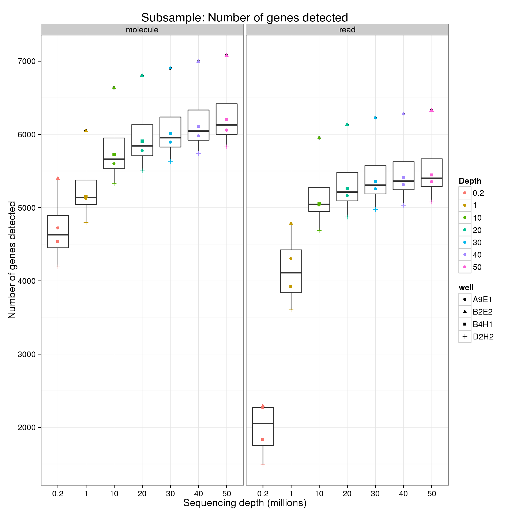
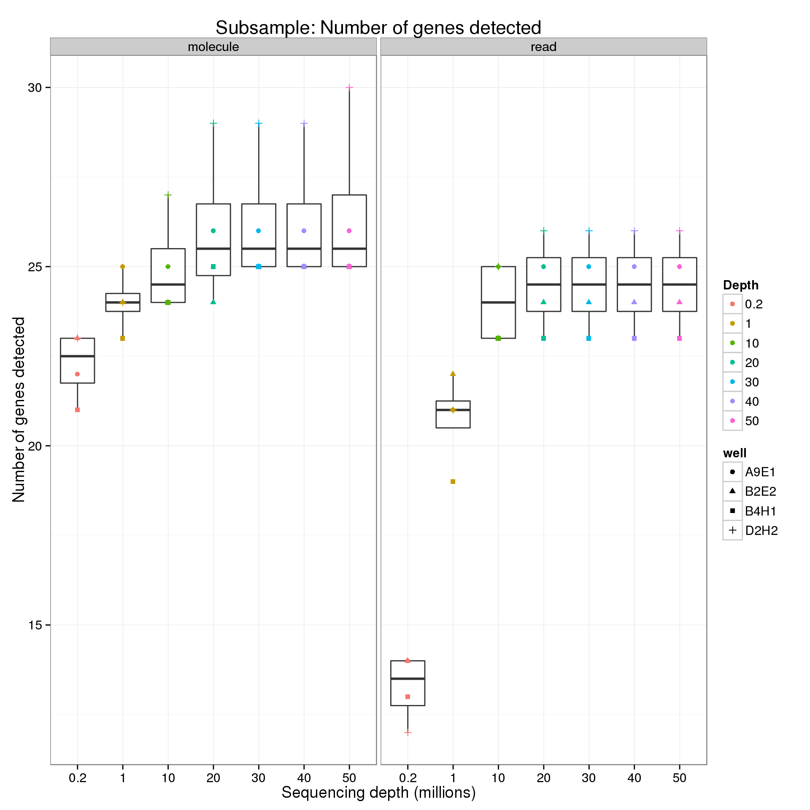
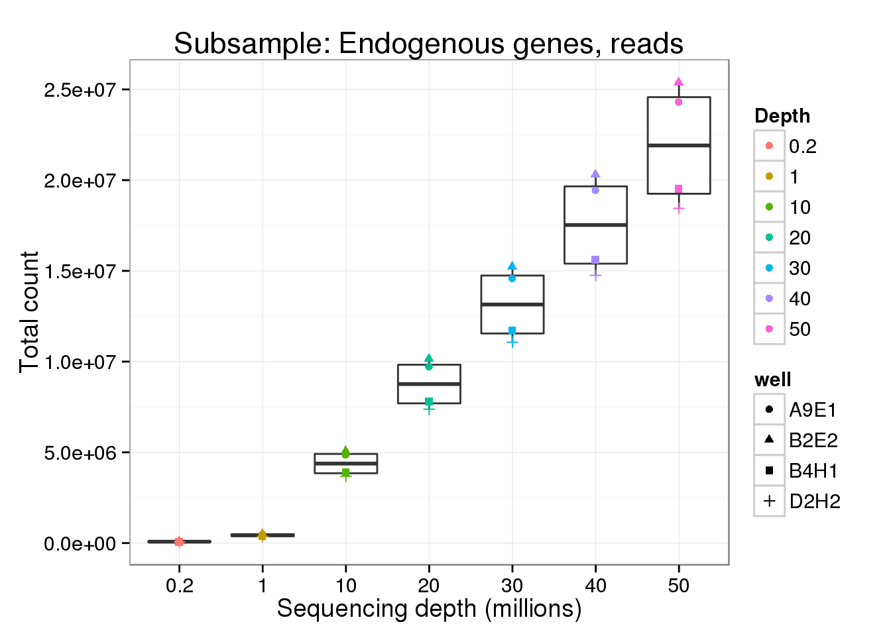
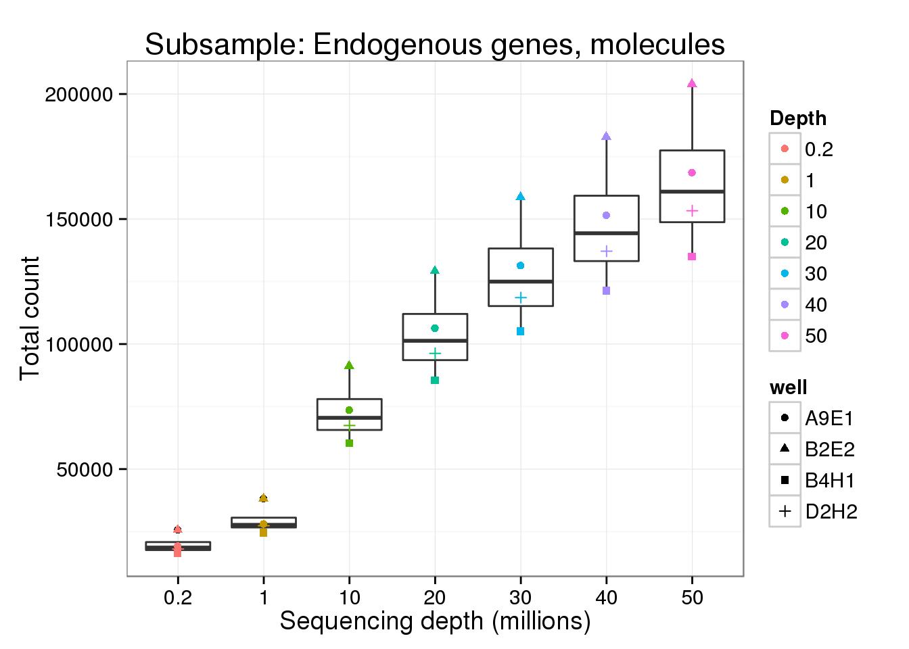
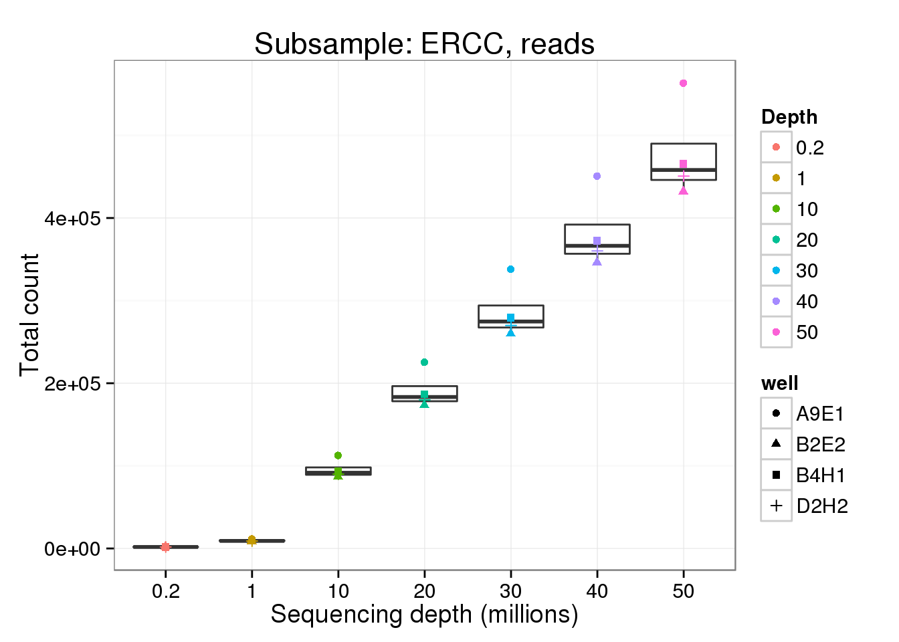
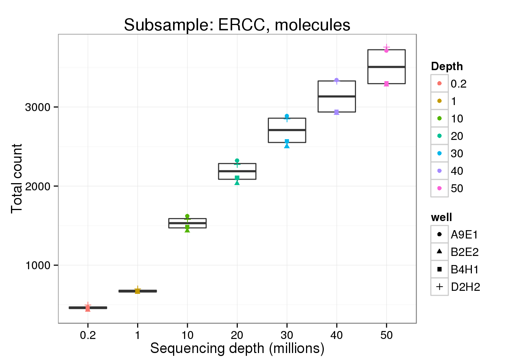

Last updated: 2015-08-18
Code version: c9f21d3104d8d5b57ff63de56a4cf64155c81dcf
library("dplyr")
library("ggplot2")
theme_set(theme_bw(base_size = 14))Run for each single cell for each sequencing depth. The analysis is performed by detect-genes.R.
cd $ssd/lcl/full-lane
mkdir -p genes-detected
mkdir -p ~/log/detect-genes.R
CELLS=1
SEED=1
for WELL in A9E1 B2E2 B4H1 D2H2
do
for NUM in 200000 1000000 10000000 20000000 30000000 40000000 50000000
do
for GENE in ENSG ERCC
do
# Molecules
CMD="detect-genes.R $CELLS $SEED molecule-counts-$NUM.txt --min_count=1 --min_cells=1 --wells=$WELL --gene=$GENE"
DEST="genes-detected/molecule-$WELL-$CELLS-$SEED-$NUM-$GENE.txt"
echo "$CMD > $DEST" | qsub -l h_vmem=2g -cwd -V -N detect-molecule-$WELL-$CELLS-$SEED-$NUM-$GENE -j y -o ~/log/detect-genes.R -l 'hostname=!bigmem01'
sleep .01s
# Reads
CMD="detect-genes.R $CELLS $SEED read-counts-$NUM.txt --min_count=10 --min_cells=1 --wells=$WELL --gene=$GENE"
DEST="genes-detected/read-$WELL-$CELLS-$SEED-$NUM-$GENE.txt"
echo "$CMD > $DEST" | qsub -l h_vmem=2g -cwd -V -N detect-read-$WELL-$CELLS-$SEED-$NUM-$GENE -j y -o ~/log/detect-genes.R -l 'hostname=!bigmem01'
sleep .01s
done
done
doneConvert to one file using Python. Run from $ssd/lcl/full-lane.
import os
import glob
files = glob.glob("genes-detected/*txt")
out = open("genes-detected.txt", "w")
out.write("type\twell\tdepth\tfeatures\tnum_cells\tseed\tgenes\tmean_counts\n")
for fname in files:
fname_parts = os.path.basename(fname).rstrip(".txt").split("-")
type = fname_parts[0]
well = fname_parts[1]
depth = fname_parts[4]
features = fname_parts[5]
f = open(fname, "r")
out.write(type + "\t" + well + "\t" + depth + "\t" + features + "\t" + f.read())
f.close()
out.close()genes_data <- read.table("/mnt/gluster/data/internal_supp/singleCellSeq/lcl/full-lane/genes-detected.txt",
header = TRUE, sep = "\t", stringsAsFactors = FALSE)
genes_data$depth <- as.factor(genes_data$depth)
levels(genes_data$depth) <- c("0.2", "1", "10", "20", "30", "40", "50")For the analysis of read counts, a gene was detected if it had greater than 10 reads. For the analysis of molecule counts, a gene was detected if it had greater than 1 molecule.
p <- ggplot(genes_data[genes_data$features == "ENSG", ],
aes(x = as.factor(depth), y = genes)) +
geom_boxplot() +
geom_point(aes(color = as.factor(depth), shape = well)) +
facet_wrap(~type) +
labs(x = "Sequencing depth (millions)",
y = "Number of genes detected",
color = "Depth",
title = "Subsample: Number of genes detected")
p
p %+% genes_data[genes_data$features == "ERCC", ]
Explore the effect of subsampling sequencing depth on the total count. Only includes counts of genes which had the minumum count (10 reads; 1 molecule).
p <- ggplot(genes_data[genes_data$features == "ENSG" &
genes_data$type == "read", ],
aes(x = as.factor(depth), y = mean_counts)) +
geom_boxplot() +
geom_point(aes(color = as.factor(depth), shape = well)) +
labs(x = "Sequencing depth (millions)",
y = "Total count",
color = "Depth",
title = "Subsample: Endogenous genes, reads")
p
p %+% genes_data[genes_data$features == "ENSG" &
genes_data$type == "molecule", ] +
labs(y = "Total count",
title = "Subsample: Endogenous genes, molecules")
p %+% genes_data[genes_data$features == "ERCC" &
genes_data$type == "read", ] +
labs(y = "Total count",
title = "Subsample: ERCC, reads")
p %+% genes_data[genes_data$features == "ERCC" &
genes_data$type == "molecule", ] +
labs(y = "Total count",
title = "Subsample: ERCC, molecules")
The cDNA concentrations are listed as followed:
sessionInfo()R version 3.2.0 (2015-04-16)
Platform: x86_64-unknown-linux-gnu (64-bit)
locale:
[1] LC_CTYPE=en_US.UTF-8 LC_NUMERIC=C
[3] LC_TIME=en_US.UTF-8 LC_COLLATE=en_US.UTF-8
[5] LC_MONETARY=en_US.UTF-8 LC_MESSAGES=en_US.UTF-8
[7] LC_PAPER=en_US.UTF-8 LC_NAME=C
[9] LC_ADDRESS=C LC_TELEPHONE=C
[11] LC_MEASUREMENT=en_US.UTF-8 LC_IDENTIFICATION=C
attached base packages:
[1] stats graphics grDevices utils datasets methods base
other attached packages:
[1] ggplot2_1.0.1 dplyr_0.4.1 knitr_1.10.5
loaded via a namespace (and not attached):
[1] Rcpp_0.11.6 digest_0.6.8 assertthat_0.1 MASS_7.3-40
[5] plyr_1.8.2 grid_3.2.0 gtable_0.1.2 DBI_0.3.1
[9] formatR_1.2 magrittr_1.5 scales_0.2.4 evaluate_0.7
[13] stringi_0.4-1 reshape2_1.4.1 rmarkdown_0.6.1 labeling_0.3
[17] proto_0.3-10 tools_3.2.0 stringr_1.0.0 munsell_0.4.2
[21] yaml_2.1.13 parallel_3.2.0 colorspace_1.2-6 htmltools_0.2.6